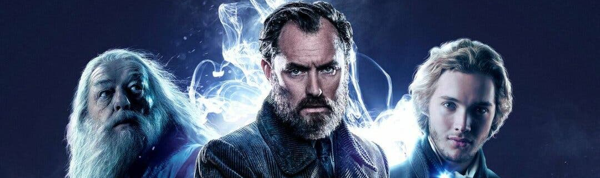

Los secretos de Dumbledore es una secuela directa de Animales fantásticos: Los crímenes de Grindelwald,
y la tercera entrega de la serie de películas basadas en Animales fantásticos y dónde encontrarlos, uno
de los libros complementarios de la Serie Harry Potter de J. K. Rowling, siendo en general la undécima
película ambientada en el mundo mágico. La película está dirigida por David Yates, con un guión de J. K.
Rowling, y Steve Kloves regresa para ayudar. Las estrellas que regresan son Eddie Redmayne, Jude Law,
Katherine Waterston, Dan Fogler, Alison Sudol, Ezra Miller, Callum Turner, William Nadylam, y Mads Mikkelsen
se une al elenco. Esta película se estrenará el 8 de abril de 2022 en el Reino Unido, Irlanda y Japón y el 15
de abril de 2022 en el resto del mundo.
Muy poco se sabe en este momento sobre la trama de la película. J. K. Rowling ha comentado, vía su cuenta de
Twitter, que veremos la "verdadera gloria" de la profesora de Ilvermorny, Eulalie Hicks, (interpretada por Jessica
Williams y que fue presentada en la entrega predecesora) en Animales fantásticos 3. Además, Rowling ha dejado
entrever que parte de la trama podría ocurrir en Río de Janeiro, en Brasil. En una entrevista en febrero de 2019,
el actor Dan Fogler también mencionó la película que se filmó en Brasil.

Sinopsis de la película:
«La puerta del multiverso, llena de misterio y locura, se abre. Ahora que Iron Man y el Capitán América se han ido después de una feroz batalla de Vengadores: Endgame, se espera que el ex cirujano genio y el mago más fuerte de todos, el Doctor Strange juega un papel activo como una figura central en los Vengadores. Sin embargo, al usar su magia para manipular el tiempo y el espacio a voluntad con un hechizo prohibido que se considera el más peligroso, ha abierto la puerta a una misteriosa locura llamada el multiverso».

Esta secuela traerá muchos cambios, especialmente tras el fallecimiento repentino de Chadwick Boseman en el verano de 2020. Marvel Studios ya ha anunciado que T'Challa no será reemplazado, así que una nueva etapa empieza para el mundo de Wakanda dentro del Universo Cinematográfico de Marvel. Y esto es todo lo que sabemos hasta ahora sobre su fecha de estreno, sinopsis, reparto y demás detalles de la producción.

Cuando creamos la primera película de 'Toy Story', diseñamos a Buzz Lightyear con la idea de que era un juguete basado en un personaje realmente genial de una película épica de gran éxito de taquilla. Bueno, todos estos años después, decidimos hacer esa película", explicó Pete Docter, director creativo de Pixar. Ahora, 10 meses después de este anuncio, finalmente hemos podido ver un primer vistazo a lo que será la precuela que nos contará un poco más acerca del astronauta que inspiró al famoso juguete. Al ritmo de "Starman" de David Bowie (que fue en mi opinión, una elección fantástica), el traíler nos muestra diversas escenas de lo que promete ser una emocionante película donde Buzz Lightyear llega a un planeta misterioso, aunque la historia que contará continúa siendo un misterio.
© Copyright 2017
Todos los derechos reservados para todos los países, de todos los textos, así como todas las ilustraciones, fotografías y documentos presentados en este sitio. Los textos, ilustraciones, fotografías y documentos son propiedad de sus respectivos autores.
Todos los derechos reservados para todos los países, de todos los textos, así como todas las ilustraciones, fotografías y documentos presentados en este sitio. Los textos, ilustraciones, fotografías y documentos son propiedad de sus respectivos autores.